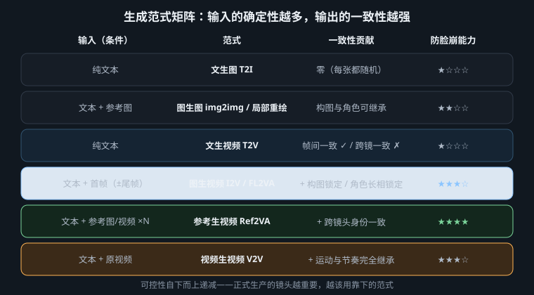
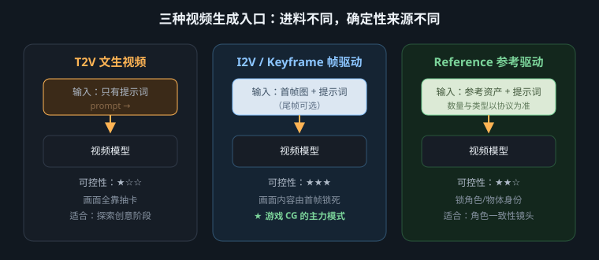

不要问哪种模式最强；先问这次输入替你冻结了什么，又把什么留给模型猜

生成任务可以拆成六类决定：语义决定出现什么，身份决定是谁，构图决定第一眼如何组织，状态决定关键时刻必须到达哪里，运动决定中间怎样变化，质感决定最后看起来像什么。纯文本把六类决定大量交给模型；图像、蒙版、关键帧、参考图和源视频则分别把其中一部分交还给创作者。
因此，输入越多不必然越稳。两张互相矛盾的图，会让模型同时追逐不同脸型；首尾帧透视不兼容，会迫使中间形体溶解；源视频动作与文本方向冲突，会产生拉扯。正确流程是先写“不可失败项”，再选择能直接证明这些事项的最小输入集合。
| 范式 | 主要夺回的确定性 | 仍交给模型 | 最适合的阶段 |
|---|---|---|---|
| T2I 文生图 | 语义、风格意图、粗略构图 | 具体身份、几何细节、随机布局 | 概念探索与首帧候选 |
| img2img 图生图 | 原图的大结构、姿态与色块关系 | 被允许重绘的外观细节 | 设定派生与风格收敛 |
| inpaint 局部重绘 | 蒙版外全部像素关系 | 蒙版内内容及边界融合 | 首帧修脸、修手、删物 |
| T2V 文生视频 | 事件意图与运动方向 | 起始画面、身份、轨迹与细节 | 动态探索、无需延续的镜头 |
| I2V 图生视频 | 真实起点的构图、身份、光色 | 离开首帧后的运动与终点 | 正式单镜头的常用入口 |
| keyframe 关键帧 | 指定时点的状态、构图或终点 | 帧间因果与过渡 | 状态切换、必须落点的镜头 |
| reference 参考生成 | 跨构图复用的身份、物体或风格 | 当前镜头的空间与时间安排 | 多镜角色和系列资产 |
| V2V 视频生视频 | 原片的时间、动作、运镜与剪辑节奏 | 外观重绘及允许偏离的细节 | 预演转成片、精确运动复刻 |
T2I适合扩展解空间：用同一需求探索机位、景别、材质和光色，但它不承诺下一张仍是同一个人。入选后转向img2img，让已批准图承担姿态、轮廓和布局，只把明确要改的服装、天气或风格交给重绘。变化强度属于具体工具的实现字段，应按当前版本测试，而不是从旧教程复制固定数值。
inpaint比整图重做更像外科手术。蒙版夺回“哪里绝对不能变”的控制权：修左手时，右手、脸、镜头和背景都不该重新抽卡。蒙版应覆盖缺陷及少量融合边缘，并向模型提供遮挡关系；若要同时改脸、手和徽章，分三次比一张大蒙版更容易判断哪一步引入错误。
T2V没有视觉起点，最擅长回答“这种动态是否值得做”，不适合独自承担跨镜身份。I2V把图片定义为实际首帧：它锁住开场构图与外观，但不能保证数秒后仍严格保真，所以提示词应少复述静态画面，多写唯一主动作、唯一主运镜和可保持的结束状态。
keyframe不只指首尾两图，也可指平台支持的中间时点。它夺回的是“何时必须出现何种状态”。首尾帧适合灯光渐亮、门由闭到开、人物从坐到站；帧间差异必须能由连续物理过程解释。关键帧越多，路径越窄，但冲突概率也越高，不能用互不相干的海报强迫模型自动发明剪辑。

reference参考输入不应被默认理解为首帧。角色正侧面、服装设定或产品多视图提供可复用特征，允许主体进入全新构图。参考图应同义互补：中性光下的清晰脸、侧面轮廓和服装结构，比九张滤镜不同、年龄不同的氛围照更可靠。引用时写清每份资产负责脸、服装、道具还是风格，避免模型把背景也当身份复制。
V2V把运动证据交给模型：真人预演、三维白模或旧片可以冻结走位、运镜、遮挡顺序与节奏，再重绘外观。它不是“自动换皮”；重绘越激进，越可能损失手脚接触、口型和精确轮廓。若运动是不可失败项，就让源视频更接近最终机位和时长，并把文本限制为材质、角色映射与必须保留的动作，不另加第二套表演。
| 生产问题 | 最小组合 | 各输入的职责边界 |
|---|---|---|
| 单镜构图必须准确 | T2I → img2img/inpaint → I2V | 图像侧验收静态；I2V只生成运动 |
| 角色跨三镜不换人 | 每镜首帧 + 同一组 reference | 首帧定当前构图；参考组定身份 |
| 物体从状态 A 到 B | 首尾 keyframe | 两帧定端点；文本说明唯一过渡 |
| 运镜和走位逐拍准确 | 预演视频 → V2V + reference | 视频定轨迹；参考资产定外观 |
| 只需发现新动态 | T2V | 接受构图与身份抽样，结果不直接承诺投产 |
给每份输入写一句职责：“首帧负责构图”“角色表负责脸与制服”“预演负责步点和横移”。若两份输入争夺同一职责却答案不同，先修资产；若某份输入没有独占职责，就删掉它。最少但正交的证据，通常比参考堆叠更稳定。
任务是一镜到底：同一位快递员走到红色智能储物柜前，柜门由闭合到开启，镜头从侧后方缓慢横移，品牌铭牌形状必须稳定。先把不可失败项列为：人物身份、红柜几何、三步走位、手触把手、柜门开启、最终三分之四构图。
不变：同一快递员；红柜比例、铭牌轮廓、把手位置；雨从画面右后方落下 运动证据：三步后右手接触把手；相机等速向右横移；柜门只绕现有铰链开启 结束状态：人物停住，门开启，镜头落在三分之四中景并保持 禁止：换脸、增加路人、柜体伸缩、手穿过把手、推镜、变焦、二次开门
| 症状 | 丢失或冲突的确定性 | 优先修复 |
|---|---|---|
| 构图一开始就错 | T2V未提供视觉起点，或首帧本身未验收 | 先做合格首帧，再转I2V |
| 角色越动越不像 | 首帧只锁起点，reference身份信号不足或矛盾 | 清理参考组、减小头部运动、缩短镜头 |
| 首尾帧之间溶解 | 端点透视、遮挡或物体数量不兼容 | 缩小差异，补合理中间帧或拆镜 |
| 动作对但外观跳动 | V2V保住轨迹，却未稳定材质与身份 | 增加职责明确的参考，降低重绘范围 |
| 手没有碰到把手 | 接触点缺乏逐帧运动证据 | 用更准确预演/关键帧，或拆成近景 |
| 参考越加越差 | 多份资产争夺同一身份或风格职责 | 删去低质量、异龄、异装和冲突背景 |
| 局部修复带动全图变化 | 蒙版过大、边界语义不足或流程并非真局部 | 缩小蒙版，分区修复并逐步验收 |